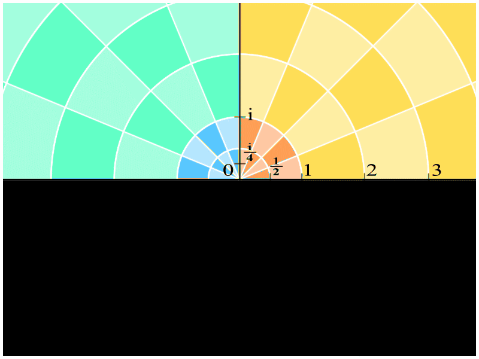
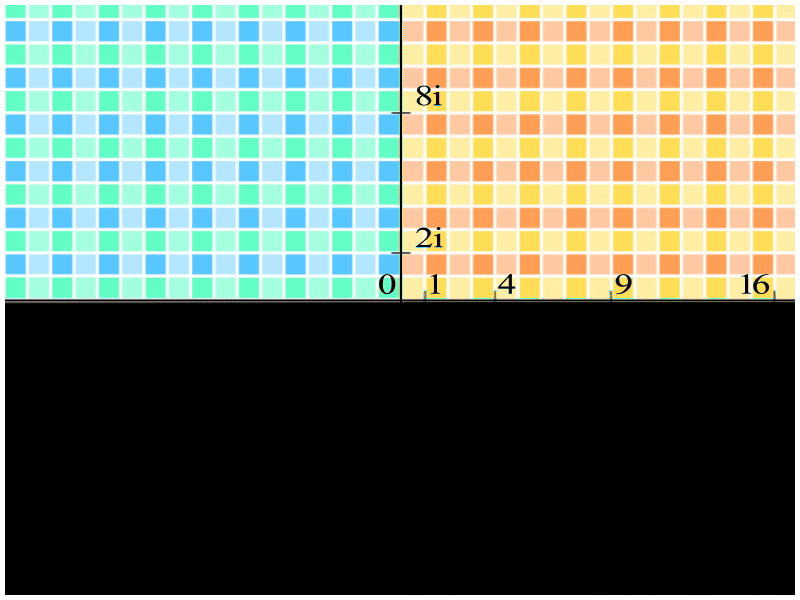
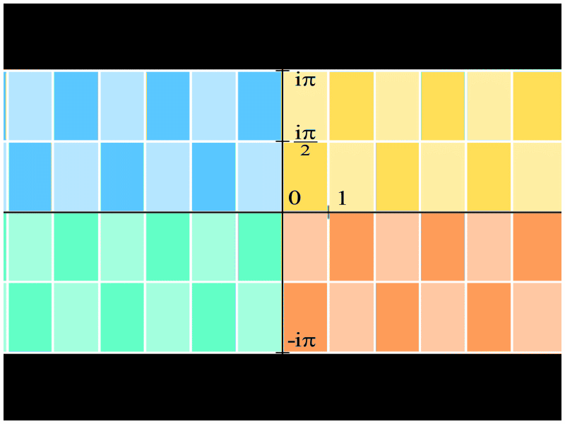
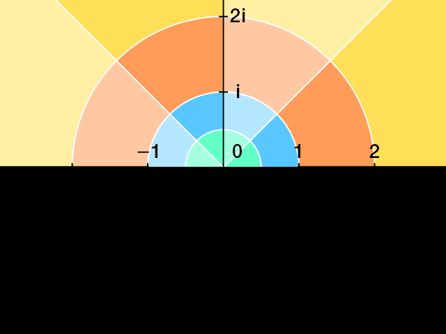
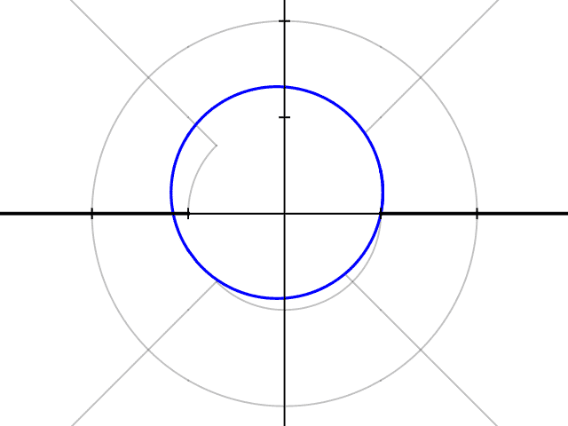

Continuous conformal transform with polar coordinate grid. Radial lines spread uniformily, circle radii scale parabolically (\(r>1\) – expand, \(r=1\) – constant, \(r<1\) – shrink):

Same transform with a Cartesian grid. All coordinate lines bend into parabolae:

Transfrom through non-conformal intermediate states. Horizontal coordinate change into radial (\(log\)), vertical coordinate change into polar

Continuous mapping through the Karman-Trefftz generalization. Radial lines bend into hyperbolae, concentric circles transform into ellipses:

Same transform applied to a circle, bending it into an airfoil profile:

Airflow around the wing obtained by transforming solution around a cylinder: